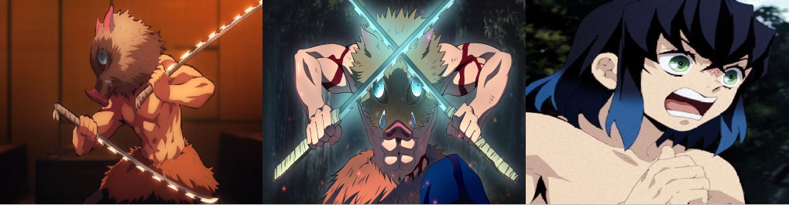

Bonjour et bienvenus sur cette page ! Ici, vous trouverez toutes sortes d'informations sur Inosuke Hashibira, un personnage de Kimetsu no Yaiba qui est, certes secondaire, mais qui prend une importance plus capitale après sa rencontre. En espérant que les informations ci-dessous vous seront utile, nous vous laissons désormais à la découvertes de cette page !
Qui est Inosuke Hashibira ?
Inosuke Hashibira est un Pourfendeur de démons et compagnon de voyage de Tanjiro Kamado.
Apparence
Inosuke est un jeune d'homme de taille normale, à la peau claire et au corps extrêmement musclé pour son âge, possédant des muscles larges et définis, particulièrement sur son ventre et ses bras. Contrastant cette figure, son visage est quant à lui très féminin et beau, avec de grands yeux verts clairs aux longs cils. Ses sourcils sont fins, et sa bouche petite. Ses cheveux noirs épais dépassent ses épaules, prenant une couleur bleue aux pointes et formant une frange indisciplinée qui tombe juste au dessus de ses yeux.
Inosuke porte une version altérée de l'uniforme des Pourfendeurs de démon, composé à un pantalon hakama baggy, teinté en un bleu-gris foncé, qu'il attache autour de sa taille avec une ceinture épaisse de poils d'animal. Le matériel épais qui entoure normalement les jambes est remplacé par ce qui semblent être de longues chaussettes en fourrure qui exposent ses talons et orteils, qui entourent aussi la base de sandales qu'il porte. Sa caractéristique la plus voyante est la tête de sanglier grise qu'il porte comme masque, les yeux enlevés afin de lui permettre de voir, qui est révélé plus tard appartenir à sa mère sanglier adoptive.
Personnalité
Inosuke est un jeune homme très colérique et fier qui aime penser qu'il est le plus fort en tout, confrontant constamment la plupart des gens qu'il rencontre et désirant le respect et les louanges des autres pour ses talents. Ceci le mène souvent à des dangers superflus, puisqu'il tend de surestimer ses capacités en comparaison de celui qu'il affronte et refuse d'accepter sa défaite, comme on peut le voir lorsque Giyu Tomioka doit l'attacher à un arbre après son duel contre le Père Démon Araignée pour l'empêcher de défier le Pilier alors qu'il est sévèrement blessé. Ce besoin constant d'être le meilleur cause aussi à Inosuke d'être très provocateur, essayant souvent d'inciter les autres, principalement Tanjiro Kamado, à le combattre, même si dans le cas de ce dernier, il échoue à cause de la nature bienfaisante de Tanjiro.
Ayant été élevé par les sangliers, Inosuke ne comprend pas bien les interactions humaines, en tout cas au début, puisqu'il pense fréquemment que les personnes qu'ils l'approchent veulent l'attacher et ne semble pas comprendre la gentillesse que les autres lui donnent.
Cependant, alors que l'histoire avance, Inosuke est de plus en plus influencé par Tanjiro et devient plus habitué à l'affection et générosité, apprenant aussi à reconnaître la force d'autres personnes que lui et développe des sentiments amicaux envers Tanjiro et Zenitsu Agatsuma, même si il conserve quand même sa fierté et son besoin constant de louanges. Il commence aussi à penser plus stratégiquement lors des combats, utilisant des tactiques plus intelligentes empruntées à des Pourfendeurs de démon plus expérimentés au lieu de courir tête baissée dans les combats.
Le sens de camaraderie d'Inosuke s'améliore grandement, comme lorsqu'il se précipita vers Muzan Kibutsuji, énonçant les morts des Pourfendeurs de démon tués et estropiés par le Seigneur des démons et exigeant qu'il leur retourne tout ce qu'il leur a pris, ou sinon qu'il meure comme punition pour ses crimes.
Histoire
Inosuke a été élevé par les sangliers pour une bonne partie de sa vie avant la Sélection Finale. Il a été révélé plus tard qu'il est né dans une famille avec un père violent et s'est échappé de son père avec sa mère.
Par la suite, Inosuke, qui était encore un nourrisson à ce moment, et sa mère furent pris par Doma dans son culte d’Éternel Paradis. Kotoha adorait chanter pour Inosuke mais changeait les paroles à chaque fois. Cependant, après avoir découvert que Doma mangeait ses disciples, Kotoha fuit avec son fils. Courant pour trouver un village humain, Kotoha finit par se trouver au sommet d'une falaise. Ne voyant aucun échappatoire, elle fit un dernier effort pour sauver Inosuke en le lâchant dans la rivière sous la falaise. Elle fut ensuite dévorée par Doma. Quelques temps après, Inosuke fut découvert et élevé par les sangliers.
Aptitudes et compétences
Aptitudes naturelles
Toucher surdéveloppé : Ayant grandi dans les montagnes, Inosuke a développé un incroyable sens du toucher. Il peut sentir des petites vibrations dans l'air. En utilisant cette capacité, il peut savoir si quelqu'un le regarde, particulièrement si ils ont de mauvaises intentions. Il peut même trouver la localisation exacte qu'ils regardent, ce qui lui donne un avantage au combat.
Combat à mains nues : Inosuke est un très bon combattant puisqu'il est capable d'égaler Tanjiro et même le surpasser avec sa flexibilité et son style de combat non conventionnel qui ressemble à "quatre pattes d'une bête" à cause de la façon dont ses coups viennent d'un angle aussi bas tout en étant très féroce et incorporant d'autres mouvements non-orthodoxes, le rendant imprévisible et vicieux.
Flexibilité : Inosuke est très souple, au point où il peut mettre sa tête entre ses jambes. Plus tard, il montre la capacité de se luxer le bras pour atteindre quelque chose, et même de se disloquer n'importe quelle articulation de son corps s'il le souhaite.
Résistance au poison : Inosuke a été capable de résister et survivre au poison de la Sixième Lune considéré extrêmement mortel, ce qui suggère qu'il est immunisé aux poisons. Cependant, comme Aoi Kanzaki l'a dit, cela veut aussi dire qu'aucun médicament de Shinobu Kocho ne marchera sur lui, donc, si il est exposé à un poison plus puissant que celui de Gyutaro ou un poison auquel il n'a pas développé de résistance, ils ne peuvent pas être utilisés comme remèdes et il serait dans un plus grand danger de mort.
Aptitude à l'épée
Souffle de la Bête
Développé par Inosuke après avoir vécu dans les montagnes, le Souffle de la Bête est un Souffle original exclusif à son créateur. Grâce à son sens du toucher sur développé, il peut utiliser plusieurs mouvements.
Techniques
Premier Croc : Perforation
(
Inosuke poignarde le cou de la cible avec ses deux sabres.
Deuxième Croc : Déchirure
Une taillade une croix avec ses deux sabres, en diagonal.
Troisième Croc : Déchiquetage
Taillades simultanées vers la gorge de l'ennemi.
Quatrième Croc : Éminçage
Multiples taillades en doubles diagonales avec les deux sabres.
Cinquième Croc : Trancheur Fou
Technique qui coupe tout dans toutes les directions.
Sixième Croc : Morsure Irrégulière
Décapitation simultanée avec ses sabres dans les deux directions.
Septième Mouvement : Détection
Inosuke peut identifier la position de ses ennemis en sentant de faibles vibrations dans l'air. Il plante généralement ses sabres dans le sol pour utiliser cette technique.
Huitième Croc : Charge du Sanglier
Inosuke charge à toute vitesse son l'ennemi, sans même faire attention à sa défense.
Neuvième Croc : Taillade Ondulante Divine
Inosuke disloque les articulations de son bras pour augmenter sa force d'attaque.
Dixième Croc : Les Crocs Tournoyants
Inosuke fait tourner ses sabres. Il a utilisé cette technique pour dissiper les nuages gelés de Doma.
La Frappe Lancée
Inosuke jette ses deux sabres vers l'ennemi.
Relations
Tanjiro Kamado
Inosuke voit Tanjiro comme un rival à cause de son esprit de compétition. Pendant les mois passés ensemble, Tanjiro eut un effet positif sur Inosuke car, depuis l'avoir rencontré, ce dernier est devenu plus ouvert à propos de la force d'autres personnes, comme les Piliers. Inosuke a aussi développé sa faculté de réflexion et d'analyse quant aux capacités de ses ennemis. Alors qu'Inosuke considère encore Tanjiro comme un rival, il est clair qu'il fait attention à lui, et les deux sont devenus des amis proches.
Zenitsu Agatsuma
Lors de leur première rencontre, il est représenté distinctement leur personnalités totalement différentes. Inosuke a une personnalité colérique et est toujours prêt à se battre alors que Zenitsu tend à être lâche et préférer éviter la confrontation comme lorsqu'il essayait de protéger Nezuko. Inosuke est constamment rabaissé par Zenitsu à cause de son manque de connaissances, au point même d'être insulté pour sa stupidité. Malgré cela, les deux arrivent à surmonter leur aversion pour l'autre, et s'associer afin de vaincre des démons puissants, comme lors de leur rencontre avec Daki dans le District de l'Entrainement.
Shinobu Kocho
Shinobu apprend rapidement à manipuler Inosuke d'une façon similaire à Tanjiro, comprenant qu'elle peut le convaincre à faire n'importe quelle tâche en doutant de sa capacité à le faire. Inosuke montre son attitude irrespectueuse et agressive habituelle envers Shinobu, allant jusqu'à la menacer de lui déchirer la poitrine quand il se sent insulté par les doutes de cette dernière. Cependant, il est clair qu'après avoir pris soin de lui lorsqu'il était blessé, Inosuke commença à développer de l'affection pour Shinobu, jurant de venger sa mort après avoir appris que Doma l'a absorbée. Le comportement pur de Shinobu et son utilisation du "promis juré" avec Inosuke a rappelé à ce dernier par inadvertance des souvenirs enfouis de sa mère. On remarque aussi que Shinobu est une des seules personnes dont le nom n'est jamais oublié par Inosuke.
Merci à vous d'avoir visitez ce site, et plus particulièrement cette page, en espérant que celle-ci vous aura été utile !
さようなら ！
AU REVOIR !